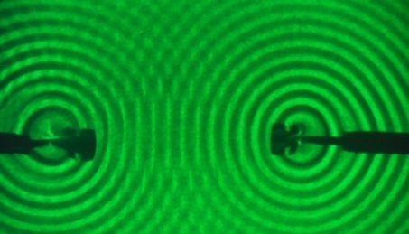
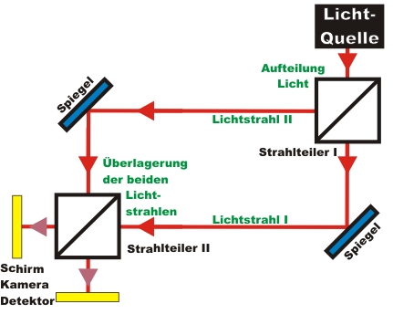

Interferenz Kapitel 1:
Grundlagen: Helles Licht im Interferometer
Interferenz ist ein Phänomen, das wir in unserem Alltag in vielen Bereichen beobachten können. Auf der folgenden Seite werden die Grundlagen zur Interferenz zunächst mit Wasserwellen erklärt. Im zweiten Abschnitt geht es um die Interferenz von hellem Licht im Interferometer. Im letzten Abschnitt wird die Messmethode zur Einzelphotoneninterferenz motiviert.
Interferenz von Wasserwellen
Treffen zwei Wasserwellen aufeinander, so überlagern sich die jeweiligen Wellenberge und Wellentäler. Werden zwei Wasserwellen periodisch erzeugt, so können im Überlagerungsbereich Stellen hoher Wasserberge und niedriger Wassertäler (konstruktive Interferenz) beobachtet werden. Destruktive
Interferenz tritt auf, wenn Wellenberg auf Wellental trifft. Das zeitlich stabile Muster aus konstruktiver und destruktiver Interferenz wird als Interferenzmuster bezeichnet. Für ein Interferenzmuster werden mindestens zwei periodische Sender mit fester Phasenbeziehung benötigt. Die beiden Sender sind in einer Wasserwanne z. B. zwei Tupfer, die periodisch in das Wasser eintauchen (Abb. 1).

Abb. 1: Interferenz von Wasserwellen durch zwei periodische Erzeuger
Auch in der Akustik kann die Interferenz von Schallwellen wahrgenommen werden. Die beiden Sender sind hier z. B. zwei Lautsprecher, die einen Ton mit gleicher Frequenz und gleicher Phasenbeziehung aussenden. Das Interferenzmuster ist mit dem Ohr oder über ein Mikrophon wahrnehmbar. Es gibt zwischen den beiden Lautsprechern Stellen mit konstruktiver Interferenz (hohe Lautstärke) und Stellen mit destruktiver Interferenz (niedrige Lautstärke).
Interferenz von hellem Licht
Interferenz kann auch bei hellem Licht beobachtet werden. Für ein Interferenzmuster wird Licht von zwei räumlich getrennten Lichtquellen überlagert. Um ein Interferenzmuster beobachten zu können müssen beide Lichtquellen eine zeitlich feste Phasenbeziehung besitzen. Aufgrund der hohen Frequenz von Licht ist eine feste Phasenbeziehung zweier unabhängiger Lichtquellen experimentell nur schwer zu realisieren. Für Interferenzmuster aus Licht wird deshalb ein Lichtstrahl über einen 50% Strahlteiler in zwei gleichhelle Lichtstrahlen aufgeteilt (Abb. 2). Die beiden Lichtstrahlen durchlaufen unterschiedliche Wege und werden auf einem zweiten Strahlteiler überlagert. Eine solche Anordnung wird ganz allgemein als Interferometer bezeichnet.

Abb. 2: Interferometer: Der Lichtstrahl wird in zwei Strahlen aufgeteilt und wieder überlagert
Wenn der Wegunterschied der beiden Lichtstrahlen I und II kleiner als die Kohärenzlänge des Lichtes ist, so kann nach dem zweiten Strahlteiler ein Interferenzmuster beobachtet werden (Abb. 3). Deutlich sind bei diesem Muster helle Stellen (konstruktive Interferenz) und dunkle Stellen (destruktive Interferenz) erkennbar. Wenn es an einer Stelle im Interferenzbild dunkel ist, so wird das Licht nicht absorbiert, sondern auf den anderen Beobachtungsschirm geleitet. Auf dem zweiten Schirm kann das inverse Interferenzmuster zum ersten Schirm beobachtet werden. In einfachen Schulinterferometern werden meist Interferenzringe beobachtet. Die Ringe kommen durch die Strahldivergenz des aufgeweiteteten Laserpointers zustande. In unseren Experimenten verwenden wir nahezu paralleles Laserlicht, wodurch die Kreisradien sehr groß werden und nur noch Interferenzstreifen sichtbar sind.
Interferenz ist ein Phänomen, dass nur bei Wellen auftritt. Das Interferenzmuster von Licht ist erklärbar, wenn Licht eine wellenartige Eigenschaft zugeschrieben wird. Die in Abbildung 2 skizzierte Anordnung wurde im Jahr 1891/1892 unabhängig von den Wissenschaftlern Mach und Zehnder entwickelt und wird seitdem als Mach- Zehnder Interferometer bezeichnet.

Abb. 3: Interferenzmuster von hellem Laserlicht - aufgenommen mit einer Webcam
konstruktive (rote Linien) und destruktive (schwarze Linien) Interferenz
Vereinfachung des Interferometers
Der Versuchsaufbau für Experimente sollte möglichst einfach sein und aus wenigen Komponenten bestehen. Das oben skizzierte Mach- Zehnder Interferometer kann vereinfacht werden, indem die beiden Strahlteiler durch einen einzelnen Strahlteiler ersetzt werden (Abb. 4). Bei diesem vereinfachten Interferometer wird das Licht der Lichtquelle zunächst am Strahlteiler in zwei Lichtstrahlen aufgeteilt. Die beiden Lichtstrahlen treffen nach dem Strahlteiler jeweils auf einen Spiegel und werden danach auf dem gleichen Strahlteiler wieder überlagert. Dieses Interferometer wird nach dem Wissenschaftler Michelson (1852-1931) benannt.
Abb. 4: Aufbau eines Michelson-Interferometers. Links: Skizze, Rechts: Experiment
Veränderung der beiden Wege im Interferometer
Wird die Länge eines Interferometerarms kontinuierlich verändert, so treffen die Wellberge und Wellentäler versetzt zueinander auf. Im Experiment wird zur Veränderung der Wegstrecke im Lichtstrahl II ein Verschiebetisch verwendet (siehe Abb. 2 rechts). Mit dem Verschiebetisch kann eine Schrittweite bis zu 3nm (!) realisiert werden. Beobachtbar ist ein stabiles wanderndes Interferenzmuster (Video 1). Für das Video wurde der Beobachtungsschirm durch eine Kamera ersetzt. Hinweis: Bei nicht ausreichender Systemvorraussetzung kann das Video ruckeln.
Video 1: Interferenzmuster bei Veränderung der Wegstrecke von ca. 100nm/s in einem Interferometerarm
Möglichkeiten zur Aufnahme des Interferenzbildes
Ein Interferenzmuster von Licht kann mit einem Beobachtungsschirm, mit einer Kamera oder mit einem Detektor für helles Licht betrachtet werden. Für die Aufnahme des Interferenzmusters kann der Verschiebetisch in einer festen Position bleiben oder sich langsam und kontinuierlich bewegen. In der unteren Animation werden die verschiedenen Methoden mit einer Erklärung kurz vorgestellt. Die letzte Methode wird für die späteren Interferenzexperimente mit einzelnen Photonen verwendet.
Im nächsten Kapitel wird das Interferometer nicht mit hellem Licht, sondern mit einzelnen Photonen betrieben. Der Detektor für helles Licht wird dabei durch einen Einzelphotonendetektor ersetzt. Anstatt des hellen roten Lichts wird eine angekündigte Einzelphotonenquelle verwendet. Wie sieht das Verhalten von einem einzelnen Photonen im Interferometer aus? Kann ein einzelnes Photon überhaupt mit sich selbst interferieren?
Zum Kapitel 2: Interferenz von einzelnen Photonen
Zurück zur Übersicht
Autor: P. Bronner, Dezember 2008